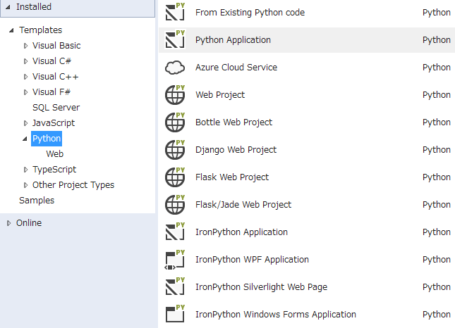

先日Visaul Studio Communityが発表されましたね。 個人であればProfessional相当の機能が使い放題とは太っ腹です（正確には個人以外でも使えますが）。 私はVCのC++11の対応の遅さに呆れ、ここ数年VSは使わなかったのですが、MSはじまったなと思ったので久しぶりに触ってみました。しかし、C++11は相変わらずいまいちでした（テンプレートエイリアスはできるようになりましたが）。
で本題ですが、プロジェクトのウィザードを見てたらなにやらPythonの文字が

すでに知ってる人は当たり前のようですが、Visual StudioでPythonをがっつり書けるとは個人的にはびっくりしました。 ちゃんとしたレベルで対応してます。以下スクショ。
intellisenseはもちろん、
デコレータが来ても認識しますし、型も予測してくれます。 下の図ではきちんとstr型のメソッドが出力されてますね。
デバッグもブレークポイントを張ったり、変数をごにょごにょするのも自由自在。
vertualenv＆pipもできる。
パッケージのインストール後は予測にもちゃんとでてきます。
雑感
プロジェクトウィザードを見るに、DjangoだけではなくFlaskまで入ってるとはWebを意識しているようです。 MS的にはPythonでWebアプリやWebサイトを作ってもらってAzureで動かしてもらおうという魂胆なんでしょうか。 Azureって企業向けでべらぼうに高いものと思ってたのですが、 無料のコースもあるそうなので、何かネタがあればAzureでPython製のWebアプリでも作ってみようかなと思いました。 （.NETもオープンソース化されて盛り上がりそうだからC#で書くってもありかなぁ。）